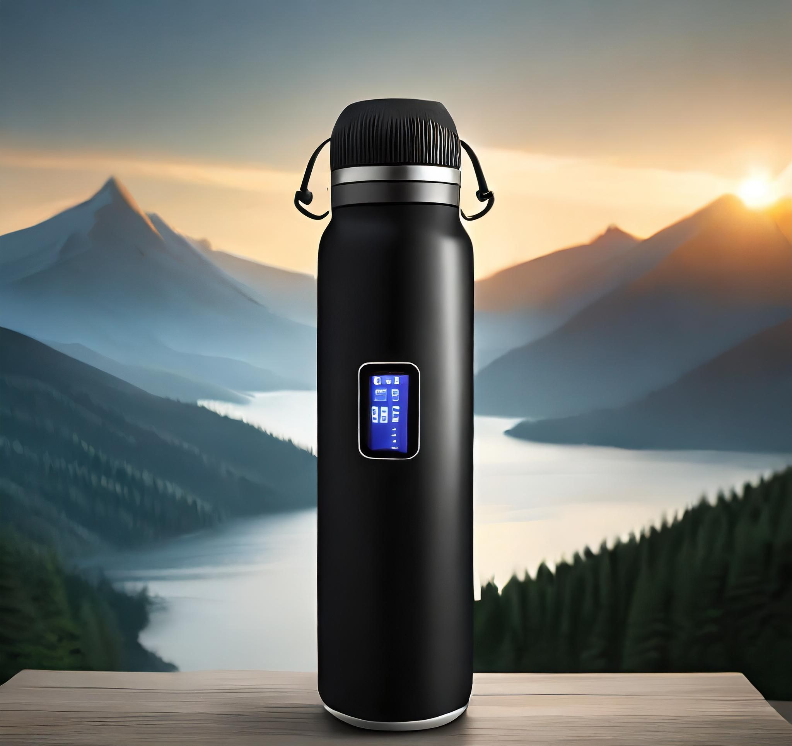

Imagine cada gole da sua bebida favorita como uma experiência sublime, onde quer que esteja, com o controle preciso da temperatura através de um toque no seu smartphone - bem-vindo à revolução das garrafas térmicas, à nossa Garrafa de Controle de Temperatura.
Feita com materiais premium, sua construção em vidro borossilicato garante a pureza do sabor, enquanto o vácuo entre camadas mantém a temperatura ideal por horas.
Equipada com tecnologia de ponta e um aplicativo exclusivo, oferece controle remoto e ajuste preciso da temperatura, garantindo a perfeição a cada gole.
Versátil, varia a temperatura de 10°C a 25°C, proporcionando o máximo conforto em todas as estações.
Não aceite menos que a perfeição - faça da sua próxima bebida uma experiência extraordinária com a Garrafa de Controle de Temperatura.